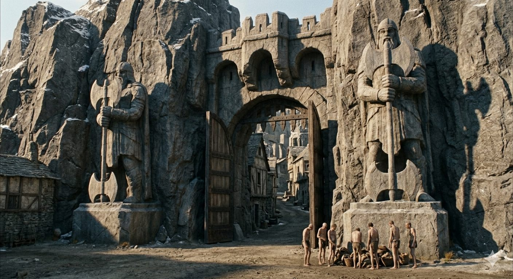

Часть 1
Глава 2.4
- Что ты задумал? – Спросил Йереда Цэль, едва тот спустился на землю.
Ему не полагалось заговаривать первым, хотя он и главный помощник. Его кровь, его положение были настолько несоизмеримы с кровью прямого потомка Шета, что в присутствии владетеля Цэлю полагалось молчать пока ему не разрешат говорить. Но порядки в городе Каина отличались от порядков, за его стенами. Поэтому— и потому, что воплотить задуманное Йередом мог только мастер, — у властителя не дрогнул ни один мускул от гнева. Больше того, он улыбнулся и спокойно сказал.
- Я писал о цели своего визита Рокэаху.
Слово своего он слегка подчеркнул интонацией.
- Знаю, - Цэль поджал губы, - Рокэах мне говорил.
«На рожон лезет!» - Бешенство поднималось в Йереде тяжелой волной, и он чуть не врезал нахалу. Но снова сдержался и снова растянул губы в холодной улыбке.
А Цэль, как ни в чем, продолжал.
-Я не понимаю смысла затеи. Твоя кровь настолько сильна, что родословная жен практически не имеет значения. Твое потомство без всяких вмешательств унаследует от тебя твои свойства. Возможно, даже длинную жизнь.
- Я обсужу это с мастером, - стиснув зубы ответил владетель.
- Ладно, пойдем, - сказал Цэль.
Он тоже был раздражен. Владетели мнят себя венцом творения, а без мастеров не смогли бы и нож кухонный выковать. Чуть что – и бегут к мастерам. Сделайте им то, дайте им это....
- А что с меркавой? Мы ее бросим?
Взгляд Цэля показал, какого он мнения об уме Йереда.
-Не волнуйся, владетель, с ней будет все хорошо.
- Хорошо?! - Йеред схватил Цэля за руку и рванул на себя.
- Смотри на меня! Меркава без охраны стоит среди поля, а ты говоришь: «будет все хорошо»!?
Цэль взглянул на пальцы, сжимавшие его руку, потом медленно перевел взгляд на Йереда. Йеред скрипнул зубами и неохотно отпустил Цэля.
- Охрана на месте, - ледяным голосом сказал главный помощник Рокэаха и показал в сторону маленьких холмиков. - Разве не видишь?
На меркаве Йеред прилетел в город впервые и здешних порядков защиты её он не знал.
- Охрана внутри этих холмиков? – Спросил он, стараясь заставить свой голос спокойно звучать.
- Тебе не стоит вникать – достаточно знать, что она под охраной. Ну так что, мы, наконец, можем идти?
И не дожидаясь ответа двинулся в город.
«Не убивать! - Приказал себе Йеред. – Очевидно нас видно из холмиков!»
Он и в правду почувствовал на себе чей-то пристальный взгляд.
Никуда не денешься: стоит мастерам закрыть ворота города для владетелей, и через сто лет внуки властителей будут драться за кусок сырого мяса на руинах дворцов.
Знание, которым не пользуются, это плод, на который можно только смотреть. Хотя главы высших родов хранили знанье о многом, только линия Каина научилась превращать знания в вещи и веками совершенствовала это искусство. Потому что мало знать, что из мрамора можно вырезать статую, нужно знать - как!
За стенами города владетели царили над миром. В городе мастера воплощали знания в жизнь. Без их трудов дворцы бы быстро рассыпались, механизмы бы замерли, и очень скоро бы выяснилось, что синей крови мало для смирения рабов. И тогда… пришлось бы искать тех, у которых хватило ума не оттолкнуть от себя мастеров.
«Вот скотина!» - В Йереде бурлил гнев. - «Ну ничего, я тебе отомщу! Дай мне только сторговаться с Рокэахом. Да я тебя повешу на твоих же кишках!..»
Массивные городские ворота охранялись гигантами, которых вырезали из цельной скалы. На их каменных лицах застыла решимость раскроить череп любого, кто посмел прийти не с добром. Йереду показалось, что истуканы живые, и что они просветили его и Цэля насквозь, и даже покопались в их душах.
… Лет двести назад, он просил изготовить для него точно такие и предложил за них отдать что угодно на выбор. Ему отказали без объяснений.
Тогда он зазвал к себе мастера. Распарил его в ваннах, велел класть ему на спину горячие камни. Обнаженные рабыни умастили его специальными мазями и блаженно попискивали, когда он шлепал их по аппетитным местам. Йеред сам горстями кидал благовония в курильницы, и смеялся любой шутке гостя.
Слуги принесли множество ваз с перезревшими финиками, которые туманили мозг и возбуждали желание общаться. Гость финики ел, рабынь тискал и болтал обо всем, кроме статуй. И утром Йеред знал о них не больше, чем вечером…
Цэль сделал знак оставаться поодаль.
-Тварь, - процедил властитель сквозь зубы, - ты мне еще посвисти!
Цэль убедился, что владетель остановился, и вошел под высокую арку. Справа от него открылась узкая дверь, и он вошел внутрь.
-Каждый раз в этом городе что-то новое, - шепотом высказал он свое недовольство.
- А иначе нельзя!
Владетель повернулся на месте и увидел у себя за спиной людей, одетых в одни лишь короткие фартучки, почти не прикрывшие чресел.
«Болтают все, кто ни попадя, что за порядки? Этот долбаный город! Лучше платить посредникам в трое, чем терпеть это хамство!»
Но городской не знал правил приличия. Он, похоже, вообще не считал нужным понять, перед кем он стоит.
— Защита стареет, если её не менять, — уверенно сказал городской. — Даже самая умная стена со временем слепнет.
Йеред отвернулся, сделав вид, что заинтересовался вооружением истуканов.
— Лучше бы яйца свои подвязал, чтобы на виду не болтались, — шепотом процедил он.
Но городской не смутился. Судя по всему, он любил поучать.
- Вот недавно один владетель заказал себе стену. Мы построили то, что он попросил.
- Попросил! - Фыркнул Йеред. – Владетель? Тебя?
- Нас, - непрошеный лектор не собирался смущаться. – Нас попросил – мы построили. Высокую, с «мертвыми взглядами» и с «нитями ощущенья живого». Даже мышь под землей не пробралась бы живой ближе, чем сотни шагов до стены. Ну и что же ты думаешь?
Оборона — постоянная забота владетелей. И он подумал, что ни смотря ни на что стоит узнать, чем кончилась история хама.
— Ну? — Спросил он.
— Так вот, - с готовностью продолжил незваный рассказчик. – Дикари, стали часто приходить на опушку и подолгу там оставались, потом начали приводить с собой пару десятков слонов. Они не делали попыток приблизиться - просто водили слонов взад-вперед. Далеко от стены. День за днем.
— Зачем? — Нахмурился Йеред. — Слоны — не годятся против огненных нитей.
Непрошенный лектор возликовал.
— Для того, чтобы шмира на стене привыкала, что они всегда рядом, и они не опасны. А однажды дикари ломанулись на штурм. У шмиры, разумеется, стрел и огня не хватило. Первые легли горой мяса, а задние погнали по трупам слонов, и те сделали бреши. Вот и все - владения нет.
— А что же шмира? —Спросил Йеред, вспомнив сына и подумав, что уж он-то подобное нападение не проспал бы.
- Глупость это - верить в машины. Воюют не машины, а люди!
Владетель обернулся на голос и увидел, что у ним подходит Цэль.
«Почему я узнаю эту историю от какого-то оборванца? - Подумал Йеред. – Похоже, моя разведка совсем не так хороша, как я думаю».
-Пойдем, - поторопил его Цэль. - Мастер нас ждет.
Дверь под аркой оставалась открытой. За ней виднелись две ниши, в виде тел - одна для людей, одна для владетелей.
- А если не владетель и не человек? - Спросил Йеред.
- Другим в городе нечего делать! Встань сюда, - Цэль указал на нишу побольше. – Да не так, прижмись лицом к камню.
Йеред брезгливо провел пальцем по пыли.
-Ну да, - Цэль ладонью стер пыль. - Давно к нам владетели не приезжали – обычно мы к ним. Надо прижаться. Вот, теперь хорошо. Теперь ладони. Сюда разверни! Замри.
Ударил такой яркий свет, что брызнули слезы.
- Выходи, - скомандовал Цэль, когда свет погас.
Йеред сделал несколько нетвердых шагов, видя перед собой только разноцветные пятна.
-Владетель, неужели ты глаза не закрыл? - С насмешкой, но как бы участливо спросил Цэль. - Я думал ты бывал в городе!
- Бывал, - буркнул Йеред. - Только когда это было!
- А, ну значит, очень давно. Потому что сколько я себя помню, эти ниши здесь были всегда.
- Сколько помнишь себя? Разве это давно?- Не смог промолчать Йеред.
Цэль очень сильно его раздражал. Он вообще городских не долюбливал.
- Я смотрю, домов стало больше, - сказал Йеред, крутя головой. – Кажется, тут луг раньше был… Гляди-ка, сейчас оживленная улица.
Цэль окинул дома беглым взглядом.
- Мне тридцать лет. Луга не помню. Эти дома для обслуги вроде тех, с которыми ты говорил у ворот.
В голосе Цэля прозвучала досада.
«А-а, жить-то хочешь…Так тебе и надо, зазнайка! Еще столько же, максимум сорок годов и тебя закопают. И гонор тебе не поможет, и вся твоя техника. А я буду жить, когда от твоей могилы и холма не останется!»
- Этой стелы здесь не было! – Заметил владетель, указав на колонну, острие которой, казалось, вздымалось до неба. - Такая громадина! А она еще и вращается?
- Подумаешь, - отмахнулся от него Цэль, и указал на барельеф на колонне, изображающий мастера, держащего в руках полуразвернутый свиток. - Видишь имя?
- Мое? Почему?
- Тут имена всех посетителей города.
Йеред оглядывался, пока колонна не скрылась из вида. Имена всех посетителей? Как? Зачем? Да кто ж их поймет!..
Они вышли к холму с вершиной белой от снега.
- Холм не высокий, - Йеред был удивлен. – Откуда ж на нем взялся снег? При такой-то жаре?
- Это замок Тальхура. Он желал, чтобы его замок был на границе зимы и лета. Над одной его половиной всегда солнце, и птицы поют. А над другой - метель и на крыше сугробы. Там очень холодно - я чуть не замерз, когда меня забыли за дверью. Я брел по пояс в снегу, мои ноги совсем отнялись. Спасибо Рокэаху, мастеру, он смог оживить мои мышцы.
- Кто пустил тебя в замок?
- Рокэах. Когда я поступил к нему на службу, он повел меня брату представить.
- Рокэах с владетелем замка? Они братья?
- У нас нет владетелей, - презрительно сказал Цэль. – У нас – мастера!
Йеред фырнул и еще раз внимательно пригляделся к холму. На сей раз увидел отчетливо мерцающую завесу на границе сезонов. Капельки дождя пересекая ее превращались в снежинки.
- Нам сюда, - помощник мастера показал на широкую улицу, в конце которой виднелось чудовищное сооружение. – Это замок Рокэаха, скоро придем.
… Мастера живут в своих замках, которые каждый строит, как можно чуднее. Один, к примеру, воздвиг себе замок на склоне горы, среди низвергающихся по склону потоков. Вода разбивалась о камни, и в облаках брызг дрожали тысячи радуг.
Другой себе выбрал покой. Йеред помнил его замок - сложный ансамбль из аркад, на крышах которых разбиты сады. Лестницы со скульптурами соединяли их в единый фантастический комплекс. А под берегом вяло несла свои воды река, в прозрачной воде которой скользили странные рыбы.
Откуда взялись в городе горы, водопады и реки, Йеред не знал. Предполагал, что они имели ту же природу, что и бассейн с водой реки сада Эдена, который был в его дворце…
Замок Рокэаха был уже близко.
- Вот это да! – Йеред остановился, чтобы получше его разглядеть.
Высокий холм, склоны которого подпирали стены из монолитов. От них, плавно снижаясь, отходили длинные контрфорсы, по верху которых шли дорожки и лестницы. Все венчал зиккурат из десятка серых зданий с отвесными стенами, которые не имели даже намека на украшения.
- Пойдем, Рокэах нас ждет! – сказал Цэль. – Он злится, когда его время не ценят!
Владетель поспешил догнать Цэля, и пошел рядом с ним, роняя капли пота на утрамбованный гравий. У входа провожатый вынул из кармана и дал владетелю апельсин.
- Я не голоден, - пропыхтел Йеред.
- Дай его ей.
И он указал на маленькую обезьянку, которая сидела на дереве и пристально смотрела на них.
- Ей? Зачем?
- Просто дай.
Йеред посмотрел на Цэля, убедился, что тот и не думал шутить, пожал плечами, и взял апельсин.
-На! Иди! - Он подбросил плод на ладони. - Да не хочет она!
- Подожди. Видишь? Она сейчас подойдет.
Обезьянка не спеша слезла с дерева, и приблизилась к Йереду. Бросила быстрый взгляд на Цэля, словно бы спрашивая: «Этот с тобой?»
И Йереду показалось, что тот почти незаметно кивнул.
Врожденная способность проникать в сущность вещей, закричала, что обезьянка не просто зверёк. Он хотел спросить Цэля об этом, но обезьянка подбежала к нему и выхватила из его руки апельсин. Владетель дернулся от прикосновения маленькой лапки.
Обезьянка, не отрываясь смотрела на Йереда и ему стало неуютно, под прицелом ее пронзительных маленьких глаз. Он почувствовал себя также, как у ворот города.
-Йеред, - вдруг сказала она, голосом самого Йереда. – Владетель.
- Теперь можно входить, - сказал Цэль и открыл высокую дверь.
Оглядываясь на обезьянку, Йеред вошел в замок Рокэаха.
